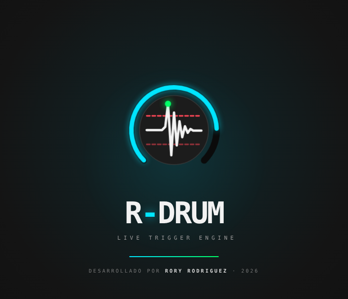

01 / DETECCIÓN
Cada pad, a tu medida.
Hasta 8 pads con selector de entrada, umbral, ganancia, filtros y curva de respuesta. Ajusta cada uno al micrófono o trigger conectado.
Entrada y configuración por pad
Live trigger engine · para macOS
Dale a tu batería los sonidos que imaginas. Dispara samples o instrumentos virtuales desde una interfaz de audio convencional y mezcla cada pad a tu manera.
Mac Intel y Apple Silicon · ZIP de 7 MB
Sin clave para empezar. Internet al abrir la trial.

Control por pad, en una sola ventana.

Captura real de la app. La latencia depende de tu interfaz, el tamaño del buffer y los instrumentos utilizados.
Pensado para tocar
Ajusta la detección de cada golpe, elige tus sonidos y controla la mezcla desde R-DRUM.
Hasta 8 pads con selector de entrada, umbral, ganancia, filtros y curva de respuesta. Ajusta cada uno al micrófono o trigger conectado.
Capas por velocidad, round robin, crossfade y humanización para dar variación a tus samples.
Carga tus samples o utiliza un instrumento virtual AU o VST3, como Superior Drummer. También puedes combinar ambas fuentes.
Regula micrófono real, preset e instrumento de forma independiente por pad. El fader del pad controla la mezcla final.
Guarda sesiones y cambia entre ellas con un pedal MIDI o un pedal Bluetooth que envíe teclas compatibles.
Envía notas MIDI desde los pads para utilizarlas o grabarlas en tu estación de audio, con el ruteo correspondiente.
Una batería. Tres fuentes.
Puedes dejar el sonido real al frente, reforzarlo con un sample o mezclarlo con tu instrumento virtual. El balance se decide en cada pad.
Crossfade y humanización actúan sobre los samples de R-DRUM. La detección y la mezcla se ajustan a tu equipo.
El carácter de tu batería y tu manera de tocar.
Tus tomas, capas y variaciones de cada instrumento.
Tu AU o VST3, con nivel y canal de salida asignados al pad.
Escúchalo en tu propio equipo
Prueba R-DRUM con tu batería, tus sonidos y tu interfaz. El plazo empieza cuando activas la prueba por primera vez en ese Mac.
Página de descarga e instrucciones ↗¿Quieres R-DRUM activado?
Contáctanos para comprar tu licencia permanente para un Mac. También puedes comprar directamente, sin probar antes.
La trial necesita internet cada vez que se abre. Después de validar puedes tocar sin conexión durante esa sesión, hasta que venza. La aplicación tiene firma local y todavía no está notarizada por Apple; macOS puede pedir autorización para abrirla. Ver detalles de esta versión.
De la prueba al escenario
Si encaja con tu forma de tocar, compra una licencia permanente y activa la app en tu Mac.
Venta y asistencia directa con Rory Rodríguez. Consulta por WhatsApp antes de comprar.
Pago único · Sin suscripción
Instrumentos virtuales y librerías de terceros se adquieren por separado.
Antes de empezar
Es opcional. Puedes trabajar con tus propios samples WAV, AIFF o FLAC, o cargar un instrumento virtual AU / VST3 compatible que tengas instalado.
Un Mac y una interfaz de audio compatible con CoreAudio para conectar los micrófonos o triggers que quieras utilizar. R-DRUM se ha probado con Focusrite Scarlett 2i2. Para trabajar con instrumentos virtuales también necesitas el plugin y sus sonidos instalados.
No. Descarga la app y pulsa «Iniciar / continuar prueba de 7 días» con internet. Reinstalarla en el mismo Mac no reinicia el plazo.
La trial comprueba el plazo al abrirse. Después de validar puedes usarla sin internet durante esa sesión, hasta el vencimiento. La versión comercial activada funciona sin internet.
La compra corresponde a un equipo. La licencia se genera para el código de ese Mac. Si cambias de equipo o necesitas otra activación, contacta al vendedor.
Esta descarga es para macOS, en Mac Intel y Apple Silicon. Por ahora no ofrecemos aquí una versión para Windows.
Hablemos de tu batería
Cuéntame qué interfaz usas y cómo quieres trabajar con R-DRUM. Puedes consultar por la prueba, la compra o la configuración.